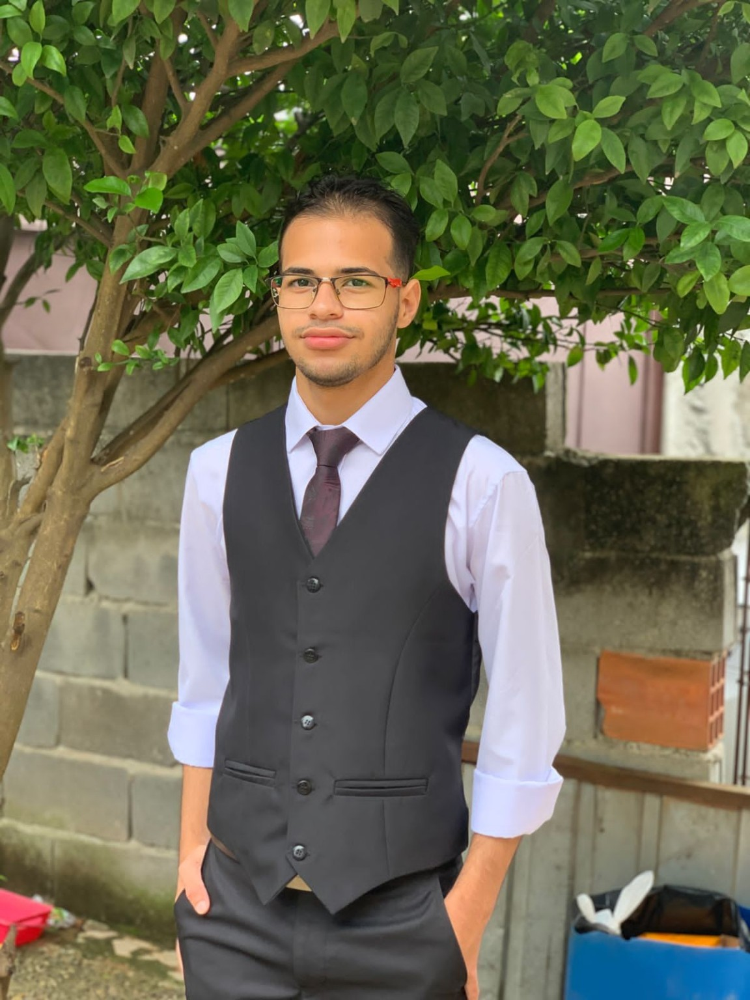

Desenvolvimento Web
HTML5, CSS, Python e fundamentos de programação.
José Luiz dos Santos

Olá! Eu sou José Luiz.
Sou estudante de Análise e Desenvolvimento de Sistemas, com formação técnica em Automação Industrial.
Conheça meu currículoAtualmente curso ADS na Universidade Braz Cubas. Também concluí o curso técnico em Automação Industrial pelo IFSP, experiência que me aproximou de programação, eletrônica, automação e resolução de problemas.
Tenho interesse em continuar desenvolvendo conhecimentos em tecnologia, especialmente em desenvolvimento web e criação de interfaces.
HTML5, CSS, Python e fundamentos de programação.
Interesse em interfaces organizadas, acessíveis e fáceis de usar.
Experiência acadêmica com Arduino e conceitos de automação industrial.